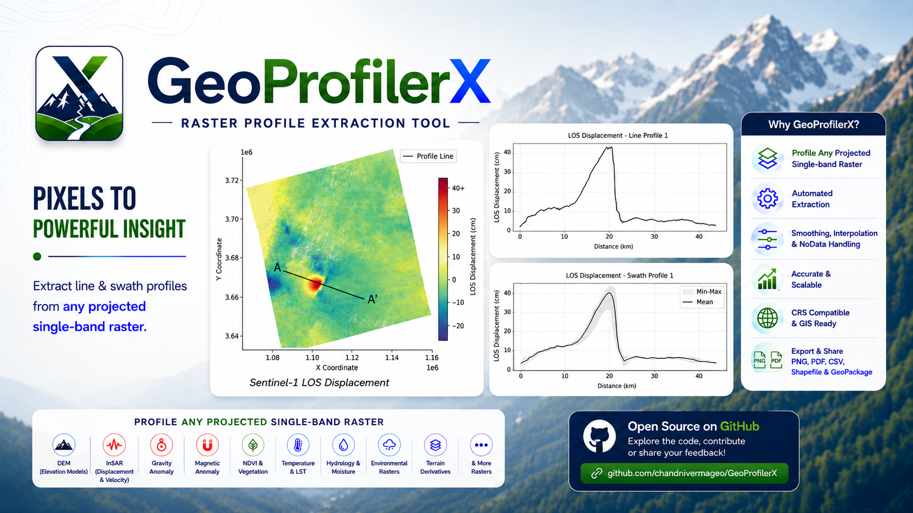
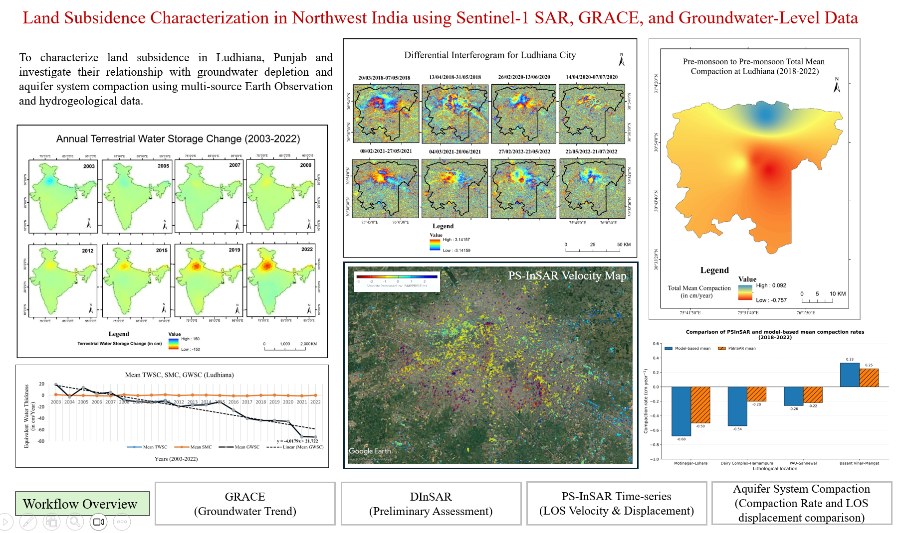

Projects
Remote Sensing, GIS, InSAR and Python-based geospatial projects.
GeoProfiler Web Application
An open-source web application for automated extraction and visualization of topographic line and swath profiles from DEM datasets.

Impact: Automates topographic profile generation from DEMs, enabling faster and more efficient terrain analysis.
Tools: Python, Streamlit, Rasterio, GeoPandas, NumPy, SciPy, Matplotlib
Web App GitHub Repository ▶ Watch DemoGeoProfilerX
An enhanced evolution of GeoProfiler, extending efficient line and swath profile extraction from DEMs to projected raster datasets such as InSAR displacement, gravity anomalies, magnetic anomalies, and more.

Impact: Streamlines raster profile extraction and figure generation, reducing repetitive manual processing while enabling consistent, reproducible analysis across multiple profiles and diverse geospatial datasets.
Tools: Python, Rasterio, GeoPandas, NumPy, SciPy, Matplotlib
GitHub Repository Example NotebookLand Subsidence Characterization in Northwest India
Investigated land subsidence in Northwest India using GRACE, Sentinel-1 DInSAR/PS-InSAR, and hydrogeological data.

Impact: Provides insights into groundwater-related land subsidence, supporting sustainable groundwater management and infrastructure planning.
Tools: ENVI/SARscape, SNAP, SARPROZ, ArcGIS, QGIS
Snow Cover Delineation & Change Detection
Developed a Python-based workflow for snow-cover extraction and scene-based change detection over the Siachen Glacier using Landsat 8 imagery and DEM integration, based on observations from 2013 and 2022.

Impact: Demonstrated a reproducible approach for snow-cover mapping and spatial change assessment using optical satellite imagery and DEM integration, with applications in glacier studies and water-resource management.
Tools: Python, Rasterio, NumPy, SciPy, Matplotlib
GitHub Repository